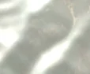
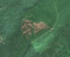

5,4 ha de pădure schimbată lângă Neagra
Între 14 aprilie 2026 și 4 mai 2026, pe aproximativ 5,4 ha de pădure din comuna Lunca Bradului, lângă Neagra, județul Mureș, imaginile Sentinel-2 arată că vegetația a dispărut sau s-a schimbat puternic. Nu pare o tăiere de lemn.
Autorizația de tăiere
nu e tăiere de pădure
Schimbarea nu pare tăiere de lemn, așa că autorizațiile de tăiere nu se aplică. Analistul AI crede că schimbarea vine din nori, nu de pe teren.


Înainte și după: Copernicus Sentinel-2, 10 m pe pixel, conturul zonei cu portocaliu. Poza detaliată (Esri World Imagery) e de acum 1–4 ani: arată ce era acolo înainte, nu tăierea.
Pe scurt
- Identificator
- 20260504_47036_25137
- Locul
- Neagra, comuna Lunca Bradului, județul Mureș (SIRUTA 118058)
- Coordonate (centru)
- 47.03601, 25.13718 · Google Maps · OpenStreetMap
- Suprafața
- 5,4 ha (din pixeli de 10 m; ± câțiva pixeli pe margine)
- Ultima imagine cu pădurea întreagă
- 14 aprilie 2026
- Prima imagine cu schimbarea
- 4 mai 2026
- Imagini în care se vede schimbarea
- 7
- Cât de sigur e semnalul din satelit
- scăzută
- Autorizația cea mai apropiată
- APV 2500164902660 · Ocolul Silvic Lunca Bradului, valabilă 1 februarie 2026 – 30 noiembrie 2026, la 0 m de zonă
- Terenul
- în afara amenajamentelor silvice publicate (pășune, mal de apă sau pădure privată fără amenajament în registru)
- Arie protejată
- Călimani - Gurghiu
- Pădure pierdută în jur, alți ani
- 2012, 2017, 2018, 2019, 2020 (Hansen)
- Garda Forestieră
- Brașov
Dacă vrei să verifici sau să sesizezi
- Pădurile din județul Mureș sunt în grija Gărzii Forestiere Brașov, care controlează tăierile și dă amenzile.
- Autorizația găsită în zonă e emisă de Ocolul Silvic Lunca Bradului.
- Formularul Gărzii Forestiere Naționale primește sesizări și fără nume. Trimite linkul acestei pagini, coordonatele și pozele. Dacă tăierea e în desfășurare, sună la 112.
- Autorizațiile și transporturile de lemn se pot căuta în Inspectorul Pădurii.
Pagina arată ce se vede din satelit și ce scrie în registrul public; nu e o dovadă în sine.
Cum citezi zona
Linkul acestei pagini nu se schimbă. Dacă zona iese vreodată de pe hartă, pagina rămâne, cu data și cu ce știam despre ea.
Pădurea RO, zona 20260504_47036_25137: 5,4 ha, Neagra, comuna Lunca Bradului, județul Mureș; schimbare văzută din satelit între 14 aprilie 2026 și 4 mai 2026. https://iliemihai.github.io/padurea-ro/zona/20260504_47036_25137/ (consultat la [data]). Date: CC BY 4.0.
Datele zonei: GeoJSON · toate zonele: date deschise · licența CC BY 4.0.
Istoricul zonei pe hartă
Starea se poate schimba când registrul publică o autorizație sau când analistul vede poze mai bune. O ținem aici, ca un link citat să arate și ce spuneam atunci.
Pe hartă cel târziu din 5 noiembrie 2026.
- 5 noiembrie 2026 – azi · nu e tăiere de pădure
Detalii tehnice, pentru verificare
De ce acest nivel de încredere:
- văzută schimbată în 7 imagini diferite
- peste 3 ha
- pădurea din jur e neschimbată
- AI-ul vede nori
- în poze, zona se schimbă vizibil față de pădurea din jur
- Placa Sentinel-2
- 35TLN
- NDVI de referință
- 0.87
- NBR de referință
- 0.66
- Scăderea în pădurea din jur
- 0.02
- Persistență
- 0.97
- NDVI / NBR după
- 0.565 / 0.34
- Analistul de zi (model)
- nori · 0.8 · claude-haiku-5-5
Cum se calculează fiecare: metodologia.
Pune harta zonei într-un articol
Copiază codul în articol (merge în majoritatea site-urilor de știri). Sau pune doar linkul: WhatsApp, Facebook și X arată singure poza zonei.